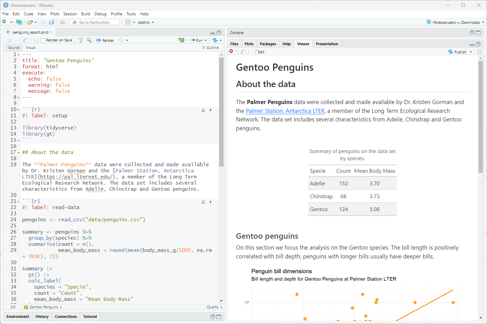

It’s time to present the data set we are using. The Palmer Penguins data were collected and made available by Dr. Kristen Gorman and the Palmer Station, Antarctica LTER, a member of the Long Term Ecological Research Network. The data set includes several characteristics from Adelie, Chinstrap and Gentoo penguins. You can read more about it on the palmerpenguins Documentation.
These data are available in R by installing the palmerpenguins package, but because we want to learn how to read data into R, we are going to read them from csv and xls files.
Reading csv files
We’ll start by loading the tidyverse package, which gives us access to dozens of functions from many packages to work with. For know we’ll use the read_csv() function to read a csv file that is stored in the data directory.
library(tidyverse)
── Attaching core tidyverse packages ──────────────────────── tidyverse 2.0.0 ──
✔ dplyr 1.1.4 ✔ readr 2.1.5
✔ forcats 1.0.0 ✔ stringr 1.5.1
✔ ggplot2 3.5.1 ✔ tibble 3.2.1
✔ lubridate 1.9.3 ✔ tidyr 1.3.1
✔ purrr 1.0.2
── Conflicts ────────────────────────────────────────── tidyverse_conflicts() ──
✖ dplyr::filter() masks stats::filter()
✖ dplyr::lag() masks stats::lag()
ℹ Use the conflicted package (<http://conflicted.r-lib.org/>) to force all conflicts to become errors
penguins <-read_csv("data/penguins.csv")
Rows: 344 Columns: 8
── Column specification ────────────────────────────────────────────────────────
Delimiter: ","
chr (3): species, island, sex
dbl (5): bill_length_mm, bill_depth_mm, flipper_length_mm, body_mass_g, year
ℹ Use `spec()` to retrieve the full column specification for this data.
ℹ Specify the column types or set `show_col_types = FALSE` to quiet this message.
In Excel or Google Sheets, data are stored in the spreadsheet and organized in cells. In R, they are stored in objects. When we read a csv file, the data goes directly to the penguins data frame and it’s ready to be used. In the Environment panel we can see the penguins object, if we click that object the data will open in a new tab for us to take a look.

RStudio tab with penguin data after View() function is call
This view is the most similar to the one we have in a spreadsheet. We can get to this panel by running view(penguins) on the console There are several other function to look at our data. Let’s use one of them:
This output is different and give us information about the type of data in each column (or variable).
Sometimes our data is not so friendly and we need to give more information to the function to be able to read the data properly. You can find these options by looking into the function’s documentation.
Go ahead and write ?read_csv() on the console. What is the name of the option to change the default delimitator?
Reading xls files
What about xls files? For that we’ll need different R package, readxl (you can installe it with install.packages("readxl"). In this case the function is called read_excel()
And that’s it, we’ve read an xls file. Of course, we sometimes have to work with files with multiple sheets or data that is no very organised. This functions comes with several options or arguments to read specific sheets (sheet = <name of the sheet>) or a specific range (range = "C1:E7") and others.
Now that we have the data read into R, it’s time to do some analysis.
Source Code
---title: "Reading data"format: html: toc: true toc-location: left code-tools: source: true highlight-style: tango---```{r setup, include=FALSE}knitr::opts_chunk$set(echo = TRUE)```## About palmerpenguinsIt's time to present the data set we are using. The **Palmer Penguins** data were collected and made available by Dr. Kristen Gorman and the [Palmer Station, Antarctica LTER](https://pal.lternet.edu/), a member of the Long Term Ecological Research Network. The data set includes several characteristics from Adelie, Chinstrap and Gentoo penguins. You can read more about it on the [palmerpenguins Documentation](https://allisonhorst.github.io/palmerpenguins/).These data are available in R by installing the palmerpenguins package, but because we want to learn how to read data into R, we are going to read them from csv and xls files.## Reading csv filesWe'll start by loading the **tidyverse** package, which gives us access to dozens of functions from many packages to work with. For know we'll use the `read_csv()` function to read a csv file that is stored in the data directory.```{r}library(tidyverse)penguins <-read_csv("data/penguins.csv")```In Excel or Google Sheets, data are stored in the spreadsheet and organized in cells. In R, they are stored in objects. When we read a csv file, the data goes directly to the `penguins` data frame and it's ready to be used. In the Environment panel we can see the `penguins` object, if we click that object the data will open in a new tab for us to take a look.{alt="RStudio tab with penguin data after View() function is call" fig-align="center" width="1000"}This view is the most similar to the one we have in a spreadsheet. We can get to this panel by running `view(penguins)` on the console There are several other function to look at our data. Let's use one of them:```{r}glimpse(penguins)```This output is different and give us information about the type of data in each column (or variable).Sometimes our data is not so friendly and we need to give more information to the function to be able to read the data properly. You can find these options by looking into the function's documentation.> Go ahead and write `?read_csv()` on the console. What is the name of the option to change the default delimitator?## Reading xls filesWhat about xls files? For that we'll need different R package, **readxl** (you can installe it with `install.packages("readxl")`. In this case the function is called `read_excel()````{r}library(readxl)penguins_xls <-read_excel("data/penguins.xlsx")```And that's it, we've read an xls file. Of course, we sometimes have to work with files with multiple sheets or data that is no very organised. This functions comes with several options or arguments to read specific sheets (`sheet = <name of the sheet>`) or a specific range (`range = "C1:E7"`) and others.Now that we have the data read into R, it's time to do some analysis.